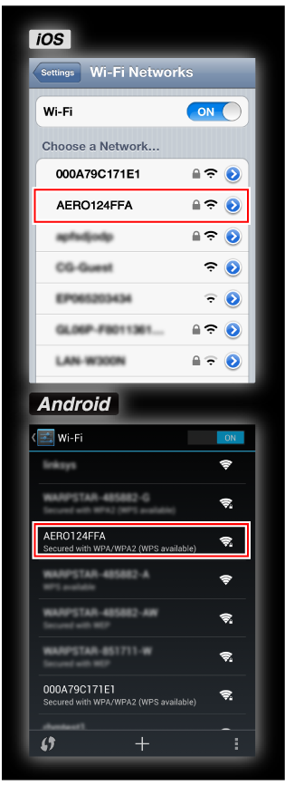
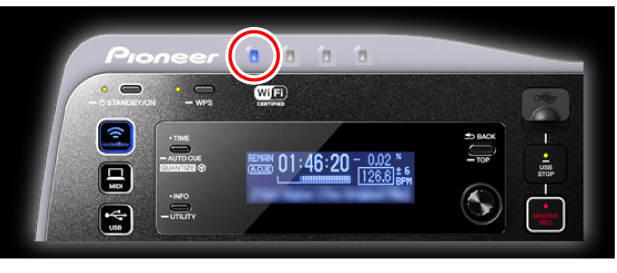

Información adicional
XDJ-AERO Guía de conexión
Para establecer comunicaciones entre un aparato portátil y el XDJ-AERO deberán verificarse en primer lugar el SSID y la contraseña del XDJ-AERO.
Antes de usar el XDJ-AERO, lea con atención el folleto “Léalo antes de usar” y el CD-ROM “Manual de instrucciones” incluido con el XDJ-AERO.
1Cuando se pulse el botón [INFO/UTILITY] del XDJ-AERO durante más de 1 segundo, el menú [UTILITY] aparecerá en la pantalla de la unidad principal del XDJ-AERO.

2Gire el codificador giratorio del XDJ-AERO para seleccionar [WLAN INFORMATION] y luego pulse el codificador giratorio.

3Cuando se gira el codificador giratorio del XDJ-AERO para seleccionar [SSID] y luego se pulsa, el SSID del XDJ-AERO se visualiza.

4Pulse el botón [BACK/TOP] del XDJ-AERO para volver a la visualización anterior.
5Cuando se gira el codificador giratorio del XDJ-AERO para seleccionar [PASSWORD] y luego se pulsa, la contraseña del XDJ-AERO se visualiza.

6Abra la pantalla de configuración de Wi-Fi del aparato portátil, toque el SSID del XDJ-AERO e introduzca la contraseña.

7Inicie rekordbox en el aparato portátil y luego toque [Load] en el menú inicial.

Cuando se establece el enlace entre el rekordbox y el XDJ-AERO, el indicador de la parte superior izquierda del XDJ-AERO se enciende.
